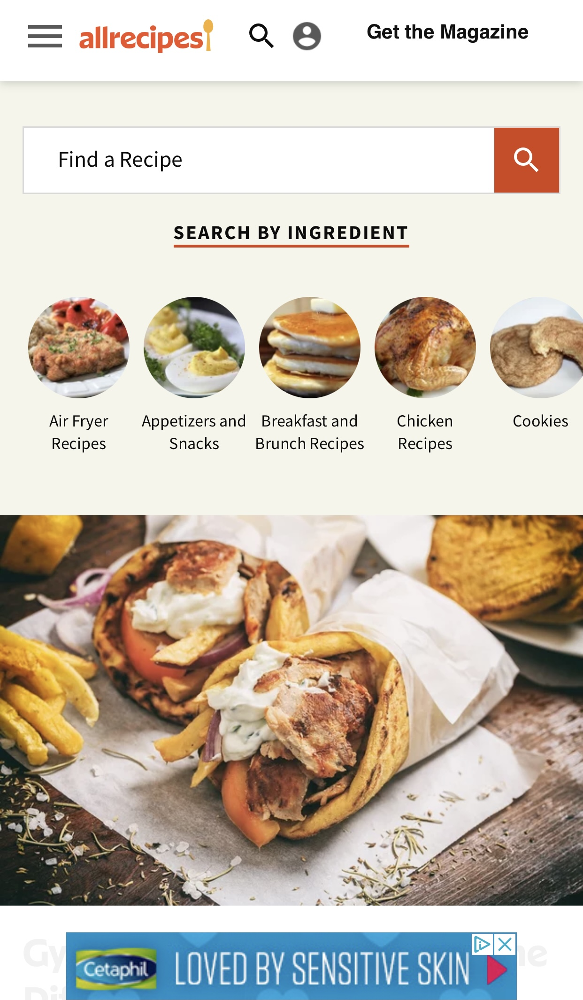

Hicks Law
PayPal
https://www.paypal.com/This page is a good example of Hicks law because it offers a very small set of calls to action. The foremost of these is the Sign Up button which is featured prominently in the center of the viewport. For returning users, the pattern of signing in at the top right becomes quickly apparent. This page features a clear message and is attractive and welcoming. The simple icons instead of text make it easy to convey the idea of securely shopping on mobile.
Whitespace & Clean Design
Duck Duck Go
https://duckduckgo.com/Featuring a prominent search box in the center of the viewport is a hallmark of many search engine giants. This page from DuckDuckGo is an excellent example of using whitespace and clean design to reassure and comfort users without skipping the functionality that they come to expect.
Repetition
Allrecipes
https://www.allrecipes.com/ There are several categories of recipes correlating to popular visitor interests - each are featured with a rounded image treatment to give a unified design appeal to this component of the page design. Mobile visitors can scroll horizontally through the categories with a simple swipe and each category cover photo has the same design treatment.